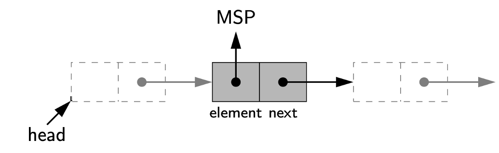
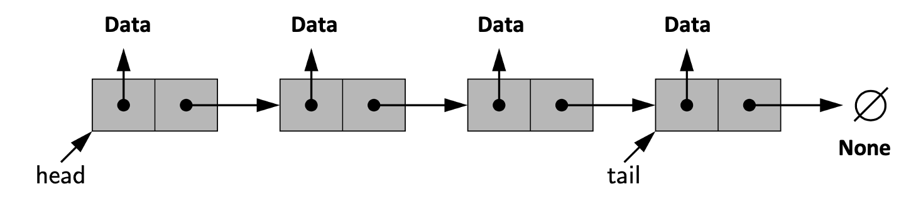
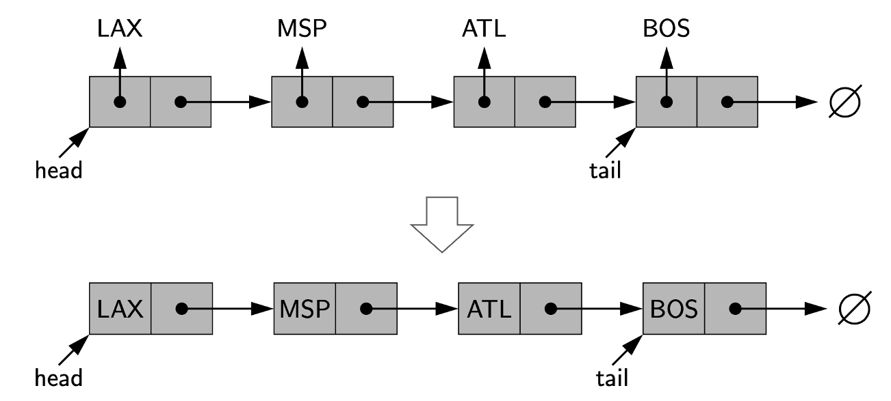
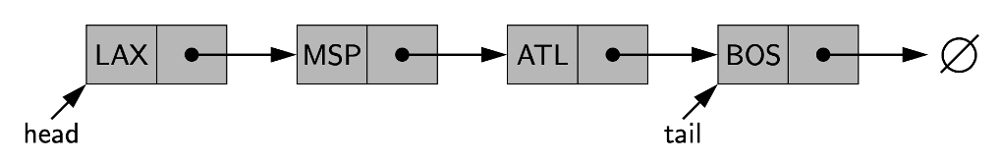
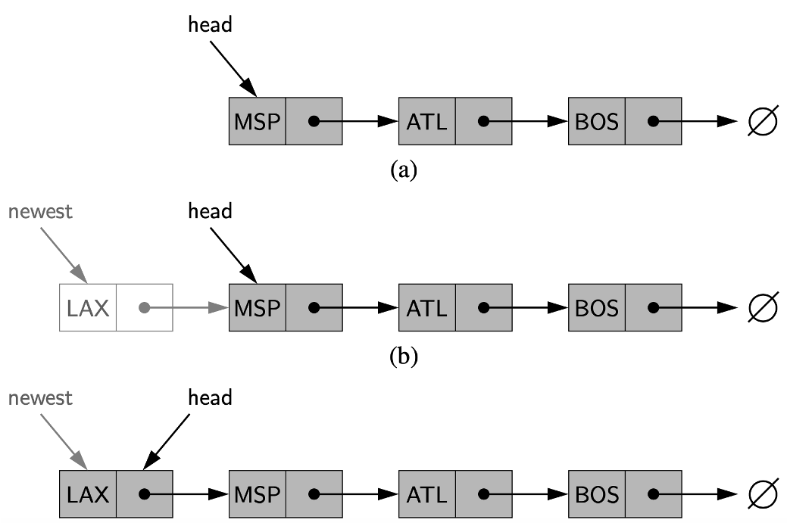
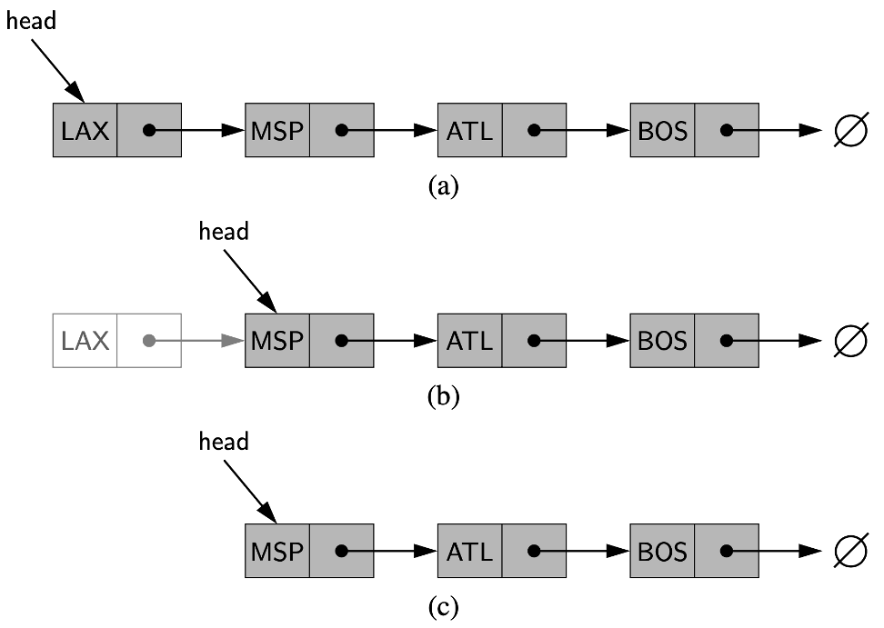
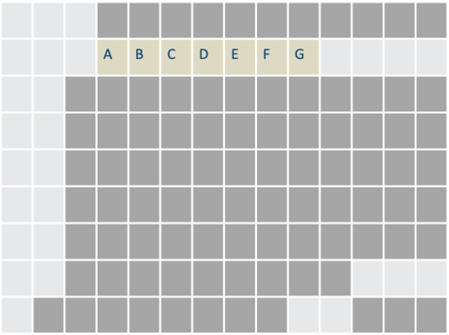
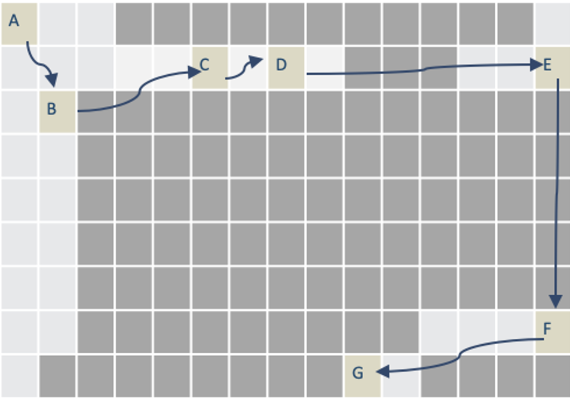

<!DOCTYPE html>
<html lang="en">
  <head>
    <meta charset="utf-8" />
    <meta name="viewport" content="width=device-width, initial-scale=1.0, maximum-scale=1.0, user-scalable=no" />

    <title></title>
    <link rel="stylesheet" href="dist/reveal.css" />
    <link rel="stylesheet" href="dist/theme/iph.css" id="theme" />
    <link rel="stylesheet" href="plugin/highlight/spyder.css" />
	<link rel="stylesheet" href="css/layout.css" />
	<link rel="stylesheet" href="plugin/customcontrols/style.css">


    <script defer src="dist/fontawesome/all.min.js"></script>

	<script type="text/javascript">
		var forgetPop = true;
		function onPopState(event) {
			if(forgetPop){
				forgetPop = false;
			} else {
				parent.postMessage(event.target.location.href, "app://obsidian.md");
			}
        }
		window.onpopstate = onPopState;
		window.onmessage = event => {
			if(event.data == "reload"){
				window.document.location.reload();
			}
			forgetPop = true;
		}

		function fitElements(){
			const itemsToFit = document.getElementsByClassName('fitText');
			for (const item in itemsToFit) {
				if (Object.hasOwnProperty.call(itemsToFit, item)) {
					var element = itemsToFit[item];
					fitElement(element,1, 1000);
					element.classList.remove('fitText');
				}
			}
		}

		function fitElement(element, start, end){

			let size = (end + start) / 2;
			element.style.fontSize = `${size}px`;

			if(Math.abs(start - end) < 1){
				while(element.scrollHeight > element.offsetHeight){
					size--;
					element.style.fontSize = `${size}px`;
				}
				return;
			}

			if(element.scrollHeight > element.offsetHeight){
				fitElement(element, start, size);
			} else {
				fitElement(element, size, end);
			}		
		}


		document.onreadystatechange = () => {
			fitElements();
			if (document.readyState === 'complete') {
				if (window.location.href.indexOf("?export") != -1){
					parent.postMessage(event.target.location.href, "app://obsidian.md");
				}
				if (window.location.href.indexOf("print-pdf") != -1){
					let stateCheck = setInterval(() => {
						clearInterval(stateCheck);
						window.print();
					}, 250);
				}
			}
	};


        </script>
  </head>
  <body>
    <div class="reveal">
      <div class="slides"><section  data-markdown><script type="text/template"><!-- .slide: class="has-light-background drop" data-background-color="#f8f8f8" -->
<div class="" style="position: absolute; left: 0px; top: 0px; height: 700px; width: 960px; min-height: 700px; display: flex; flex-direction: column; align-items: center; justify-content: center" absolute="true">

### Estructuras de Datos y Algoritmos

#### *Estructuras de Datos Lineales II*

[Eduardo Rosales](mailto:ee.rosales24@uniandes.edu.co)

Departamento de Ingeniería de Sistemas y Computación

Universidad de los Andes
</div></script></section><section  data-markdown><script type="text/template"><!-- .slide: class="has-light-background drop" data-background-color="#f8f8f8" -->
<div class="" style="position: absolute; left: 0px; top: 0px; height: 700px; width: 960px; min-height: 700px; display: flex; flex-direction: column; align-items: center; justify-content: center" absolute="true">

### Lista enlazada simple - Single Linked List

  - Colección secuencial de nodos
	- Nodo
        - Unidad básica que almacena datos y referencia al siguiente nodo
- Inicio:
    - Primer nodo (cabeza - head)
      

</div></script></section><section  data-markdown><script type="text/template"><!-- .slide: class="has-light-background drop" data-background-color="#f8f8f8" -->
<div class="" style="position: absolute; left: 0px; top: 0px; height: 700px; width: 960px; min-height: 700px; display: flex; flex-direction: column; align-items: center; justify-content: center" absolute="true">

### Cola

- Fin:
	- Último nodo (cola - tail), apunta a `None`


</div></script></section><section  data-markdown><script type="text/template"><!-- .slide: class="has-light-background drop" data-background-color="#f8f8f8" -->
<div class="" style="position: absolute; left: 0px; top: 0px; height: 700px; width: 960px; min-height: 700px; display: flex; flex-direction: column; align-items: center; justify-content: center" absolute="true">

### Recorrido


- Recorrer la lista (traversing, link hopping or pointer hopping)
	- Es navegar nodo a nodo desde la cabeza
		- Hasta la cola
			- La cola tiene una referencia a `None`
</div></script></section><section  data-markdown><script type="text/template"><!-- .slide: class="has-light-background drop" data-background-color="#f8f8f8" -->
<div class="" style="position: absolute; left: 0px; top: 0px; height: 700px; width: 960px; min-height: 700px; display: flex; flex-direction: column; align-items: center; justify-content: center" absolute="true">

### Lista enlazada simple - Características

- Operaciones comunes
	- Acceso, inserción, eliminación
- Modificable
	- Facilidad para añadir o eliminar nodos al inicio
- No indexada
	- No permite acceso directo a un nodo por índice
</div></script></section><section  data-markdown><script type="text/template"><!-- .slide: class="has-light-background drop" data-background-color="#f8f8f8" -->
<div class="" style="position: absolute; left: 0px; top: 0px; height: 700px; width: 960px; min-height: 700px; display: flex; flex-direction: column; align-items: center; justify-content: center" absolute="true">

### Lista enlazada simple - Detalle de implementación

- Se basa en la colaboración de múltiples objetos en memoria

- Hay una instancia (objeto):
  - Representa la lista
	- Guarda referencia a la cabeza
- Opcional: 
  - Guardar referencia a la cola:
	- Evita recorrer toda la lista
- Opcional: 
	- Guardar contador de nodos
		- Evita recorrido total para calcular tamaño
</div></script></section><section  data-markdown><script type="text/template"><!-- .slide: class="has-light-background drop" data-background-color="#f8f8f8" -->
<div class="" style="position: absolute; left: 0px; top: 0px; height: 700px; width: 960px; min-height: 700px; display: flex; flex-direction: column; align-items: center; justify-content: center" absolute="true">

### Representación simplificada

- Los datos en cada nodo son códigos de aeropuertos


</div></script></section><section  data-markdown><script type="text/template"><!-- .slide: class="has-light-background drop" data-background-color="#f8f8f8" -->
<div class="" style="position: absolute; left: 0px; top: 0px; height: 700px; width: 960px; min-height: 700px; display: flex; flex-direction: column; align-items: center; justify-content: center" absolute="true">

### Complejidad temporal de la lista enlazada simple
</div></script></section><section  data-markdown><script type="text/template"><!-- .slide: class="has-light-background drop" data-background-color="#f8f8f8" -->
<div class="" style="position: absolute; left: 0px; top: 0px; height: 700px; width: 960px; min-height: 700px; display: flex; flex-direction: column; align-items: center; justify-content: center" absolute="true">

### Acceso  (1/2)





  - Acceso secuencial
	  - Debe recorrerse nodo por nodo desde la cabeza
  - Sin índices directos
      - No hay acceso inmediato a un nodo específico
</div></script></section><section  data-markdown><script type="text/template"><!-- .slide: class="has-light-background drop" data-background-color="#f8f8f8" -->
<div class="" style="position: absolute; left: 0px; top: 0px; height: 700px; width: 960px; min-height: 700px; display: flex; flex-direction: column; align-items: center; justify-content: center" absolute="true">

### Acceso  (2/2)


  - El tiempo de acceso aumenta con el tamaño de la lista
	  - En el peor caso, se visita cada nodo una vez
		  - Complejidad:
			- &shy;<!-- .element: class="fragment" data-fragment-index="1" --> O(n)
</div></script></section><section  data-markdown><script type="text/template"><!-- .slide: class="has-light-background drop" data-background-color="#f8f8f8" -->
<div class="" style="position: absolute; left: 0px; top: 0px; height: 700px; width: 960px; min-height: 700px; display: flex; flex-direction: column; align-items: center; justify-content: center" absolute="true">

### Inserción al inicio (1/2)


</div></script></section><section  data-markdown><script type="text/template"><!-- .slide: class="has-light-background drop" data-background-color="#f8f8f8" -->
<div class="" style="position: absolute; left: 0px; top: 0px; height: 700px; width: 960px; min-height: 700px; display: flex; flex-direction: column; align-items: center; justify-content: center" absolute="true">

### Inserción al inicio (2/2)

- Acceso inmediato a la cabeza
- Inserción directa antes de la cabeza
-  Operación rápida e independiente del número de nodos
	- Complejidad:
    	- &shy;<!-- .element: class="fragment" data-fragment-index="1" --> O(1)
</div></script></section><section  data-markdown><script type="text/template"><!-- .slide: class="has-light-background drop" data-background-color="#f8f8f8" -->
<div class="" style="position: absolute; left: 0px; top: 0px; height: 700px; width: 960px; min-height: 700px; display: flex; flex-direction: column; align-items: center; justify-content: center" absolute="true">

### Eliminación al inicio (1/2)



</div></script></section><section  data-markdown><script type="text/template"><!-- .slide: class="has-light-background drop" data-background-color="#f8f8f8" -->
<div class="" style="position: absolute; left: 0px; top: 0px; height: 700px; width: 960px; min-height: 700px; display: flex; flex-direction: column; align-items: center; justify-content: center" absolute="true">

### Eliminación al inicio (2/2)

- Acceso directo a cabeza
- Eliminación inmediata de la cabeza
- Operación rápida e independiente del número de nodos
	- Complejidad:
    	- &shy;<!-- .element: class="fragment" data-fragment-index="1" --> O(1)
</div></script></section><section  data-markdown><script type="text/template"><!-- .slide: class="has-light-background drop" data-background-color="#f8f8f8" -->
<div class="" style="position: absolute; left: 0px; top: 0px; height: 700px; width: 960px; min-height: 700px; display: flex; flex-direction: column; align-items: center; justify-content: center" absolute="true">

###  Inserción/Eliminación interna

- Inserción/eliminación interna
	- Puede requerir recorrer hasta el nodo previo 
		- Al punto de inserción/eliminación
- Sin acceso directo
	- Se necesita navegar desde la cabeza 
		- Hasta la posición deseada
- El tiempo aumenta con la posición en la lista
	- En el peor caso, implica visitar `n` nodos 
		- Complejidad:
			- &shy;<!-- .element: class="fragment" data-fragment-index="1" -->O(n)
</div></script></section><section  data-markdown><script type="text/template"><!-- .slide: class="has-light-background drop" data-background-color="#f8f8f8" -->
<div class="" style="position: absolute; left: 0px; top: 0px; height: 700px; width: 960px; min-height: 700px; display: flex; flex-direction: column; align-items: center; justify-content: center" absolute="true">

### Inserción al final (si hay referencia a la cola) (1/2)


</div></script></section><section  data-markdown><script type="text/template"><!-- .slide: class="has-light-background drop" data-background-color="#f8f8f8" -->
<div class="" style="position: absolute; left: 0px; top: 0px; height: 700px; width: 960px; min-height: 700px; display: flex; flex-direction: column; align-items: center; justify-content: center" absolute="true">

### Inserción al final (si hay referencia a la cola) (2/2)

- Acceso inmediato a la cola
- Inserción directa
  - Operación rápida e independiente del número de nodos
	  - Complejidad:
    	- &shy;<!-- .element: class="fragment" data-fragment-index="1" --> O(1)
</div></script></section><section  data-markdown><script type="text/template"><!-- .slide: class="has-light-background drop" data-background-color="#f8f8f8" -->
<div class="" style="position: absolute; left: 0px; top: 0px; height: 700px; width: 960px; min-height: 700px; display: flex; flex-direction: column; align-items: center; justify-content: center" absolute="true">

### Eliminación al final (con o sin referencia a la cola)
- Muy costosa en lista enlazada simple
	- Aun si se tiene referencia a la cola es insuficiente
  - No permite **acceso directo** al penúltimo nodo
  - Acceso al penúltimo
    - Requiere recorrido desde la cabeza
- Complejidad 
	- Implica visitar todos los nodos
		- &shy;<!-- .element: class="fragment" data-fragment-index="1" -->O(n)
</div></script></section><section  data-markdown><script type="text/template"><!-- .slide: class="has-light-background drop" data-background-color="#f8f8f8" -->
<div class="" style="position: absolute; left: 0px; top: 0px; height: 700px; width: 960px; min-height: 700px; display: flex; flex-direction: column; align-items: center; justify-content: center" absolute="true">

### ¿Cuál  tipo de lista se debe elegir?
</div></script></section><section  data-markdown><script type="text/template"><!-- .slide: class="has-light-background drop" data-background-color="#f8f8f8" -->
<div class="" style="position: absolute; left: 0px; top: 0px; height: 700px; width: 960px; min-height: 700px; display: flex; flex-direction: column; align-items: center; justify-content: center" absolute="true">

### Gestión de memoria (1/2)

- Array List en memoria (repaso):




- Las letras representan el espacio contiguo
	- Ocupado por el arreglo
</div></script></section><section  data-markdown><script type="text/template"><!-- .slide: class="has-light-background drop" data-background-color="#f8f8f8" -->
<div class="" style="position: absolute; left: 0px; top: 0px; height: 700px; width: 960px; min-height: 700px; display: flex; flex-direction: column; align-items: center; justify-content: center" absolute="true">

### Gestión de memoria (2/2)

- Single Linked List en memoria:




- Las letras representan el espacio no contiguo
	- Ocupado por la lista enlazada simple
- Las fechas representan las referencias
</div></script></section><section  data-markdown><script type="text/template"><!-- .slide: class="has-light-background drop" data-background-color="#f8f8f8" -->
<div class="" style="position: absolute; left: 0px; top: 0px; height: 700px; width: 960px; min-height: 700px; display: flex; flex-direction: column; align-items: center; justify-content: center" absolute="true">

### Array List  - Ventajas

- Implementación sencilla
    - Almacenamiento contiguo mejora rendimiento
    - Acceso eficiente a elementos por índice
		- O(1)
	- Añadir o eliminar elementos al final es eficiente*
		- O(1)

<br>

\*Amortizados
</div></script></section><section  data-markdown><script type="text/template"><!-- .slide: class="has-light-background drop" data-background-color="#f8f8f8" -->
<div class="" style="position: absolute; left: 0px; top: 0px; height: 700px; width: 960px; min-height: 700px; display: flex; flex-direction: column; align-items: center; justify-content: center" absolute="true">

### Array List  - Desventajas

  - Tamaño inicial fijo
	  - Redimensionamiento y copiado puede ser necesario
	      - Redimensionar duplica el uso de memoria durante expansión
		      -  O(n)
- Inserción y eliminación al inicio/internas costosas
	- Por desplazamiento de elementos
		- O(n)
</div></script></section><section  data-markdown><script type="text/template"><!-- .slide: class="has-light-background drop" data-background-color="#f8f8f8" -->
<div class="" style="position: absolute; left: 0px; top: 0px; height: 700px; width: 960px; min-height: 700px; display: flex; flex-direction: column; align-items: center; justify-content: center" absolute="true">

### Single Linked List - Ventajas

- Longitud flexible
    - Se ajusta dinámicamente, sin espacio excedente
  - Inserciones y borrados al inicio son eficientes
	  - Sin desplazar otros elementos
		- O(1)
</div></script></section><section  data-markdown><script type="text/template"><!-- .slide: class="has-light-background drop" data-background-color="#f8f8f8" -->
<div class="" style="position: absolute; left: 0px; top: 0px; height: 700px; width: 960px; min-height: 700px; display: flex; flex-direction: column; align-items: center; justify-content: center" absolute="true">

### Single Linked List - Desventajas

  - Implementación más compleja
    - Mayor uso de memoria por nodo
	    - Memoria extra para la referencia al siguiente
  - Acceso lento a elementos
	- O(n)
- Inserción y eliminación internas (no al inicio) costosas
	- O(n)
- Si no tiene referencia a la cola
	- La inserción al final es costosa
		- O(n)
- Eliminación al final costosa
	- O (n)
</div></script></section><section  data-markdown><script type="text/template"><!-- .slide: class="has-light-background drop" data-background-color="#f8f8f8" -->
<div class="" style="position: absolute; left: 0px; top: 0px; height: 700px; width: 960px; min-height: 700px; display: flex; flex-direction: column; align-items: center; justify-content: center" absolute="true">

### Lista de cabeza cola - Head-Tail List

  - En algunos contextos se llama así explícitamente 
	  - A la variación de la lista enlazada simple
        - Que mantiene una referencia a la cola
</div></script></section><section  data-markdown><script type="text/template"><!-- .slide: class="has-light-background drop" data-background-color="#f8f8f8" -->
<div class="" style="position: absolute; left: 0px; top: 0px; height: 700px; width: 960px; min-height: 700px; display: flex; flex-direction: column; align-items: center; justify-content: center" absolute="true">

### ¿Array List o Single Linked List?    

- Depende:
<html lang="es">
<head>
    <meta charset="UTF-8">
    <meta name="viewport" content="width=device-width, initial-scale=1.0">
    <title>Tabla de Complejidad</title>
    <style>
        table {
            width: 100%;
            border-collapse: collapse;
            text-align: center;
            font-family: Arial, sans-serif;
        }
        th, td {
            border: 1px solid black;
            padding: 10px;
        }
        th {
            background-color: #cfe2f3;
            font-weight: bold;
        }
        td:first-child {
            font-weight: bold;
        }
    </style>
</head>
<body>
    <table>
        <tr>
            <th>Estructura de datos</th>
            <th>Acceso</th>
            <th>Inserción al inicio</th>
            <th>Eliminación al inicio</th>
            <th>Inserción al final</th>
            <th>Eliminación al final</th>
            <th>Inserción/Eliminación interna</th>
        </tr>
        <tr>
            <td>Array List</td>
            <td><b>O(1)</b></td>
            <td>O(n)</td>
            <td>O(n)</td>
            <td><b>O(1)*</b></td>
            <td><b>O(1)<b></td>
            <td>O(n)</td>
        </tr>
        <tr>
            <td>Single Linked List</td>
            <td>O(n)</td>
            <td><b>O(1)</b></td>
            <td><b>O(1)</b></td>
            <td>O(n)**</td>
            <td>O(n)</td>
            <td>O(n)</td>
        </tr>
        <tr>
            <td>Head-Tail List</td>
            <td>O(n)</td>
            <td><b>O(1)</b></td>
            <td><b>O(1)</b></td>
            <td><b>O(1)</b></td>
            <td>O(n)</td>
            <td>O(n)</td>
        </tr>
    </table>
</body>
</html>

 \* Amortizado
 
 \*\* Si  no hay una referencia a la cola (no es un head-tail list), se debe recorrer todos los nodos para insertar al final
</div></script></section><section  data-markdown><script type="text/template"><!-- .slide: class="has-light-background drop" data-background-color="#f8f8f8" -->
<div class="" style="position: absolute; left: 0px; top: 0px; height: 700px; width: 960px; min-height: 700px; display: flex; flex-direction: column; align-items: center; justify-content: center" absolute="true">

### List – API


- **TODO**
		- Revisar la [documentación de single linked list](https://isis1225devs.github.io/ISIS1225-Structure-Documentation/DataStructures.List.html#module-DataStructures.List.single_linked_listl)
</div></script></section><section  data-markdown><script type="text/template"><!-- .slide: class="has-light-background drop" data-background-color="#f8f8f8" -->
<div class="" style="position: absolute; left: 0px; top: 0px; height: 700px; width: 960px; min-height: 700px; display: flex; flex-direction: column; align-items: center; justify-content: center" absolute="true">

<i class="fas fa-question-circle fa-2x fa-spin fa-4x"></i>


<br>
<br>


[<i class="fas fa-home  fa-3x"></i>](https://eerosales24.github.io/eda_2025_20/#)
</div></script></section></div>
    </div>

    <script src="dist/reveal.js"></script>

    <script src="plugin/markdown/markdown.js"></script>
    <script src="plugin/highlight/highlight.js"></script>
    <script src="plugin/zoom/zoom.js"></script>
    <script src="plugin/notes/notes.js"></script>
    <script src="plugin/math/math.js"></script>
	<script src="plugin/mermaid/mermaid.js"></script>
	<script src="plugin/chart/chart.min.js"></script>
	<script src="plugin/chart/plugin.js"></script>
	<script src="plugin/customcontrols/plugin.js"></script>

    <script>
      function extend() {
        var target = {};
        for (var i = 0; i < arguments.length; i++) {
          var source = arguments[i];
          for (var key in source) {
            if (source.hasOwnProperty(key)) {
              target[key] = source[key];
            }
          }
        }
        return target;
      }

	  function isLight(color) {
		let hex = color.replace('#', '');

		// convert #fff => #ffffff
		if(hex.length == 3){
			hex = `${hex[0]}${hex[0]}${hex[1]}${hex[1]}${hex[2]}${hex[2]}`;
		}

		const c_r = parseInt(hex.substr(0, 2), 16);
		const c_g = parseInt(hex.substr(2, 2), 16);
		const c_b = parseInt(hex.substr(4, 2), 16);
		const brightness = ((c_r * 299) + (c_g * 587) + (c_b * 114)) / 1000;
		return brightness > 155;
	}

	var bgColor = getComputedStyle(document.documentElement).getPropertyValue('--r-background-color').trim();
	var isLight = isLight(bgColor);

	if(isLight){
		document.body.classList.add('has-light-background');
	} else {
		document.body.classList.add('has-dark-background');
	}

      // default options to init reveal.js
      var defaultOptions = {
        controls: true,
        progress: true,
        history: true,
        center: true,
        transition: 'default', // none/fade/slide/convex/concave/zoom
        plugins: [
          RevealMarkdown,
          RevealHighlight,
          RevealZoom,
          RevealNotes,
          RevealMath.MathJax3,
		  RevealMermaid,
		  RevealChart,
		  RevealCustomControls,
        ],


    	allottedTime: 120 * 1000,

		mathjax3: {
			mathjax: 'plugin/math/mathjax/tex-mml-chtml.js',
		},
		markdown: {
		  gfm: true,
		  mangle: true,
		  pedantic: false,
		  smartLists: false,
		  smartypants: false,
		},

		mermaid: {
			theme: isLight ? 'default' : 'dark',
		},

		customcontrols: {
			controls: [
			]
		},
      };

      // options from URL query string
      var queryOptions = Reveal().getQueryHash() || {};

      var options = extend(defaultOptions, {"width":960,"height":700,"margin":"0.025","minScale":"0.1","maxScale":"2.0","controls":"true","controlsLayout":"bottom-right","progress":"true","slideNumber":"true","center":"false","transition":"slide","transitionSpeed":"default"}, queryOptions);
    </script>

    <script>
      Reveal.initialize(options);
    </script>
  </body>

  <!-- created with Advanced Slides -->
</html>
